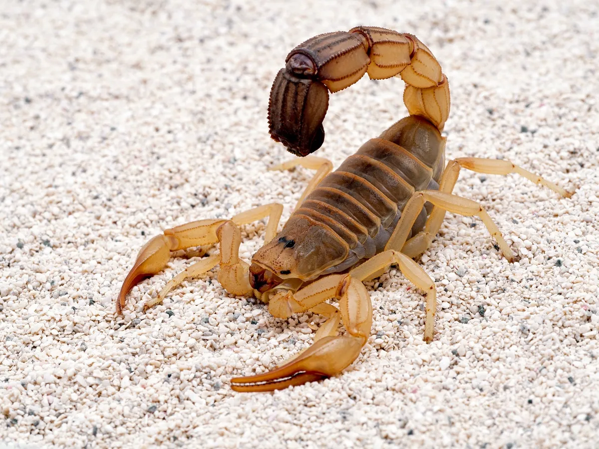
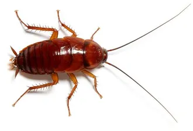
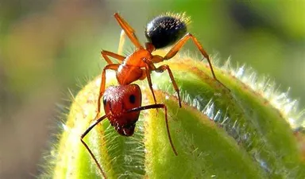

Plagas y sus epocas en la cual aparece
-
Ratas
Colocar ImagenesRattus es un género de roedores miomorfos de la familia Muridae, conocidos comúnmente como ratas. Son roedores de mediano tamaño. Poseen patas anteriores cortas y con cuatro dedos (el pulgar rudimentario) y patas posteriores, más largas, con cinco dedos. El género alberga entre 5612 y 653 especies. Dos de ellas, la rata parda (Rattus norvegicus) y la rata negra (Rattus rattus) son las especies de mayor distribución mundial de ecología marcadamente periurbana, son casi cosmopolitas, faltando solo en los polos; se han extendido por toda la Tierra junto con el ser humano
Enfermedades que transmiten las ratas
Las ratas pueden ser portadoras de agentes patógenos como virus, bacterias, protozoos, parásitos internos y externos, entre otros. Estos microorganismos pueden alojarse en sangre, tejidos, saliva y secreciones, o bien ser eliminados a través de la orina y heces. Algunos de ellos, al penetrar en el organismo de los seres humanos, pueden ocasionar enfermedades que se consideran zoonóticas, es decir, que pueden transmitirse entre humanos y personas. Algunas de sus enfermedades pueden ser- Leptospirosis
- Toxoplasmosis
- Hantavirus
- Tularemia
- Salmonellosis
- Peste bubónica (peste negra)
- Fiebre por mordedura de ratas
- Tifus
- Parásitos internos
- Parásitos externos
-
Alacranes
Scorpiones es un orden de artrópodos arácnidos depredadores conocidos comúnmente como escorpiones o alacranes. Se caracterizan por contar con un par de pinzas de agarre y una cola estrecha y segmentada, a menudo formando una reconocible curva hacia delante sobre la espalda y siempre rematada .
Sintomas cuando te pica un alacran La picadura de un alacrán puede provocarnos mareos, vómitos, dolores de cabeza y baja presión arterial, por lo que saber cómo actuar ante esta situación nos evitará futuras complicaciones. ¿Qué tiene el suero? Este suero contiene inmunoglobulinas que se sintetizan en las células plasmáticas en respuesta a los estímulos antigénicos del alacrán, pudiendo neutralizar la actividad tóxica y conferirle un cambio estructural a su molécula. ¿En dónde se encuentran alacranes con más frecuencia? Estos insectos suelen habitar los estados de Sonora, Sinaloa, Jalisco, Colima, Michoacán, Guerrero, Oaxaca, Zacatecas, Durango, Morelos, Puebla y la cuenca del río Balsas. ¿Cómo saber cuando un alacrán es venenoso? Aunque estos animales son temidos por una gran número de personas, no todas las especies son venenosas. Un alacrán potencialmente peligroso será aquel que: Posea un aguijón en forma de media luna Tenga tenazas delgadas y un color uniforme Su cola tenga una forma ovalada con una púa en forma de gancho Lo encuentres en zonas rurales o baldíos -
Arañas
 Descripcion de que es y cuando aparce este tipo de plaga
Descripcion de que es y cuando aparce este tipo de plaga
Las arañas (Araneae) son el orden más numeroso de la clase Arachnida, lejanamente emparentadas con otros grupos de artrópodos, como los insectos, con los que no deben confundirse. Tienen glándulas venenosas en los quelíceros, con las que paralizan a sus presas.
-
Cucarachas
Los blatodeos (Blattodea, del latín Blatta, «cucaracha» y del griego eidés, «que tiene aspecto de») incluye a las cucarachas, cutias o baratas y a las termitas (Isoptera). Es un orden de insectos hemimetábolos paurometábolos de cuerpo aplanado. Se conocen más de 4500 especies
Transmisoras de enfermedades Las cucarachas transmiten variadas enfermedades, decenas de bacterias patógenas se han relacionado con estos insectos. Entre las enfermedades que pueden transmitir están: Diarrea Infantil, Gastroenteritis, Conjuntivitis, Diarrea, Neumonía, Infecciones Urinarias, Infección de heridas, Fiebre Tifoidea, Lepra, Disentería, entre otras. Descripcion de que es y cuando aparce este tipo de plaga -
hormigas
Las hormigas, conocidas a nivel científico como Messor capitatus, son unos de los insectos más comunes. Concretamente pertenecen a una familia de insectos eusociales que, como las avispas y las abejas, forman parte del orden de los himenópteros.
Descripcion de que es y cuando aparce este tipo de plaga -
garrapatas
Colocar Imagenes Descripcion de que es y cuando aparce este tipo de plaga ¿Que hacer si se nos aparece este tipo de plagas? Recomendaciones